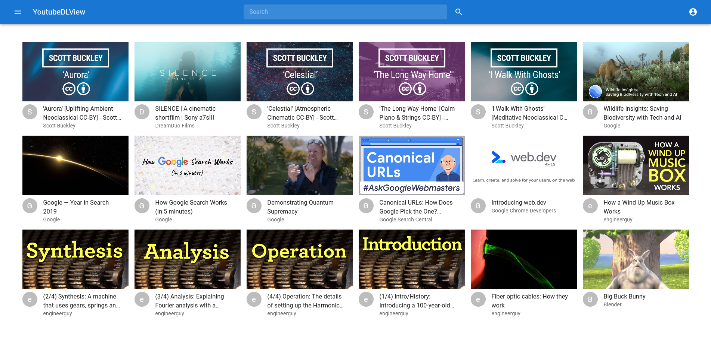

A familiar YouTube archive library
View your archived videos naturally as if you were using YouTube normally
Download -
Easily import your videos from youtube-dl
-
Displays videos and metadata just like normal youtube
-
Create accounts so more people can access your archive
-
Access your archive on other devices and on the go